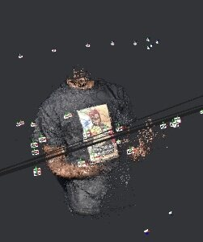
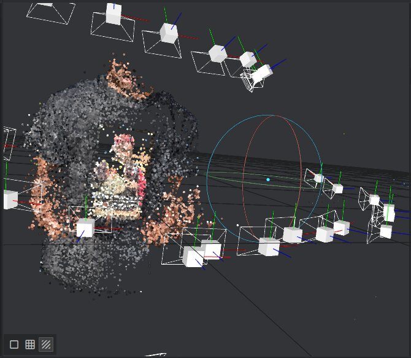
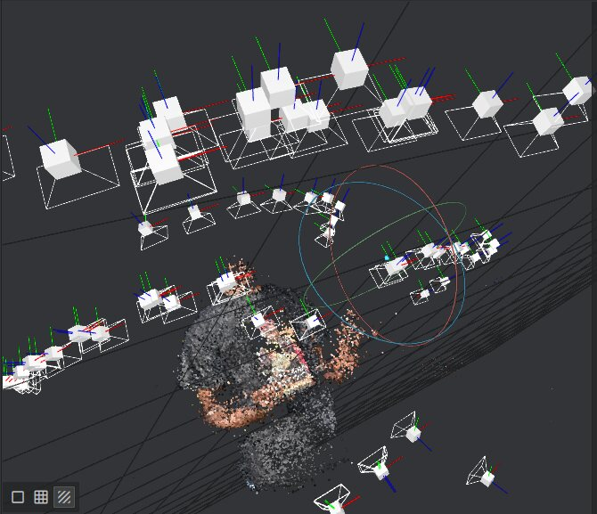
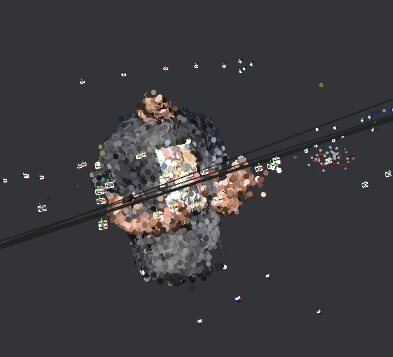
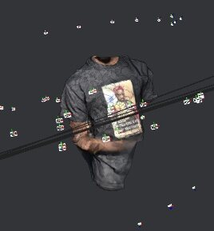
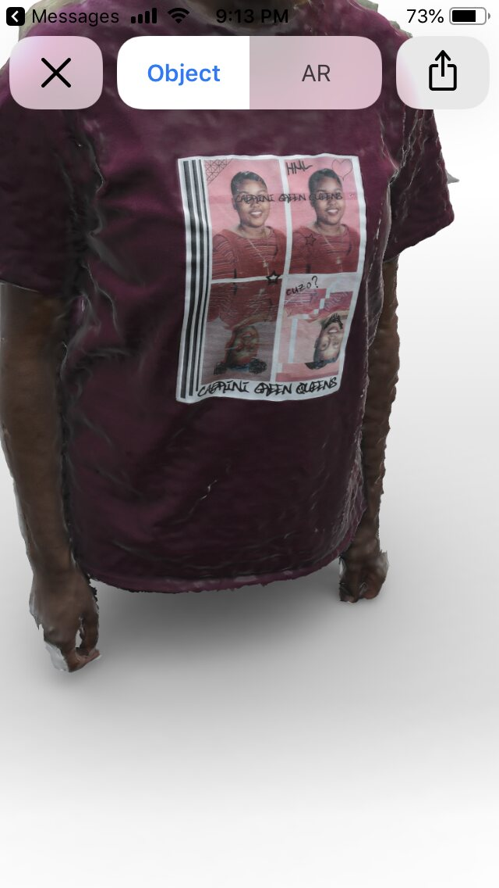
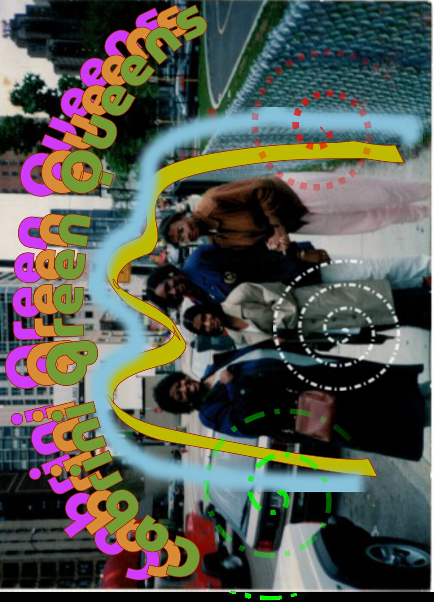

Photogrammetry Tees

Overview
I photographed t-shirts I designed from every angle and rebuilt them as textured 3D models, so they could live in AR inside PopOut.
Explore the model
The Cabrini Green Queens shirt, rebuilt from photos. Drag to rotate. On a phone, tap the AR button to place it in your space.
mommyandfriends: built from my mom's photographs.
The designs
Cabrini Green Queens is built from my mom's old photographs. She grew up in Cabrini-Green in Chicago, which is why I watermark her photos “Cabrini Green Queens.”
Cuzo was inspired by my cousin's school photo, part of a collection called Family Portrait, where I turned my take on different family members' personalities into designs. It was the first time I converted a physical object into a 3D model.


On an iPhone or iPad in Safari, tap either image to view it in AR.
Process
- Capture: photos of each shirt from many different angles.
- Build the model: load the photos into MeshLab, which turns them into a textured 3D model.
- Export for AR (.dae / .usdz) and bring it into PopOut.






How it started
I wanted to build an AR app with my own 3D models, not stock ones. While working at the Museum of Science and Industry, I'd seen that you could scan a person or an object into a 3D model with a Kinect, the motion sensor from the Xbox. I researched other ways to do it, found photogrammetry and MeshLab, and that's how this started.
I was already studying computer science and comfortable learning new software, and I was always looking for tools to expand my creative practice.

